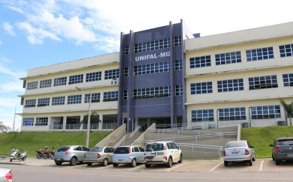
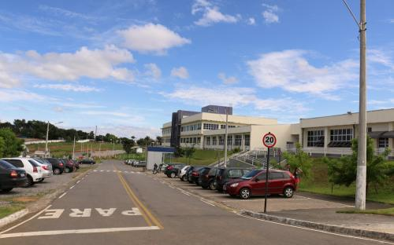

        <!--CONTEUDO-->
<div class="conteudo">
        <section>
            <div class="container">
                <div class="row">
                    <div class="col-md-8">
                        <h3>
                            <strong>Histórico</strong>
                        </h3>
                        <p>O Campus Avançado de Varginha foi autorizado pela Resolução no 36/2008
                            do Conselho Superior da UNIFAL-MG. As atividades acadêmicas do Campus Avançado
                            de Varginha foram iniciadas em 02 março de 2009, com a implantação do Bacharelado
                            Interdisciplinar em Ciência e Economia.</p>
                        <p></p>
                    </div>
                    <div class="col-md-4 p-top-row ">
                        
                    </div>
                </div>
                <div class="row p-top-row">
                    <div class="col-md-4 p-top-row ">
                        
                    </div>
                    <div class="col-md-8">
                        <h3>
                            <strong>Objetivo do Portal</strong>
                        </h3>
                        <p>A baixa participação dos discentes nas atividades de ensino, pesquisa
                            e extensão é um problema constatado pelos diferentes grupos que compoem
                            a UNIFAL-MG, campus Varginha. Constitui segundo o grupos PET deste curso
                            um grave impeditivo à proposta interdisciplinar a qual é amplamente baseada
                            nas experiencias individuais dos discentes. As experiencias de ensino,
                            pesquisa e extensão permitem que o aluno desenvolva o interesse por assuntos
                            que guiarão suas dicisões futuras para a formação da grade curricular e,
                            além disso permitem que os discentes possam aplicar os conteudos aprendidos
                            em sala de aula. A intereção com esta atividade também evita os problemas
                            de evasão. Constatou-se que uma das causas deste problema é a insuficiente
                            divulgação dessas atividades.</p>
                    </div>
                </div>
                <div class="row p-top-row">
                    <div class="col-md-8">
                        <h3>
                            <strong>Portal</strong>
                        </h3>
                        <p>Ferramenta relacionada a comunicação, na tentativa de solucionar os problemas
                            mencionados, os quais impedem a concretização da proposta interdisciplinar
                            no curso de Bacharelado Interdisciplinar em Ciência e Economia da UNIFAL-MG,
                            compus Varginha.</p>
                    </div>
                    <div class="col-md-4 p-top-row ">
                        
                    </div>
                </div>
            </div>
        </section>
   </div>
    <!--FIM DO CONTEUDO-->
